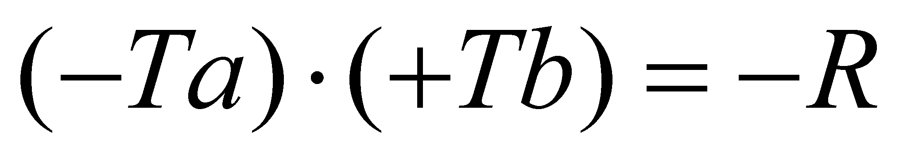

|
|
|
The establishment of the historical motivation which was the basis for assigning the epithet “real” to the numbers which belong to that particular set is not the topic of the present paper, but it is possible that this denomination would have occurred from the need to differentiate the class of the common numbers which are currently used, from another class of numbers which has appeared among time on the mathematics “scene”, that is the class of so-called “imaginary numbers”. As regards the class model, the numbers which are considered “real” are different from the “imaginary” ones only by the rule which sets the sign of the result R of the product between two terms Ta and Tb, depending on their signs (both terms belonging to the same class of numbers). The two rules are:
direct rule, which was applied to the “real” numbers, according to which:


reverse rule, which was applied to the “imaginary” numbers, according to which:
If we let aside the sign of the numbers and the above-mentioned rules, both numbers classes comply with the condition imposed by definition to both sets, which requires them to be sets containing exclusively numbers with an infinity of figures (digits). According to the objectual philosophy, in which the meaning of the word real is a totally different one, being strictly related to the concept of realizability (achievability) of an object or process, the result is that both sets of numbers from mathematics, exclusively contain virtual objects which can be symbolically rather than effectively achieved.
Copyright © 2006-2011 Aurel Rusu. All rights reserved.